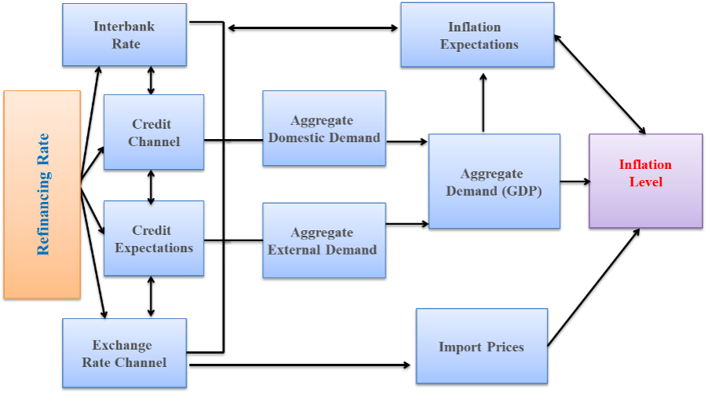

| Primary Objective of the National Bank of Tajikistan | Achieving and maintaining a stable level of domestic prices over the long term |
| Monetary Policy | Inflation Targeting Regime |
| Inflation Target | 5% ±2 p.p. (for 2026) |
| How do we keep inflation within the target? | Through the use of instruments and the transmission mechanism of monetary policy, specifically by setting:
|
| Transmission Mechanism | Through four channels:
|
| Refinancing Rate | 7.00% (effective 02 February 2026) |
| Interest Rate Corridor (overnight lending and deposit rates) |
Upper bound (refinancing rate +3 p.p.): 10.00% Centre (refinancing rate): 7.00% Lower bound (refinancing rate −3 p.p.): 4.00% |
| Who makes monetary policy decisions? | Decisions are made by the Monetary Policy Committee of the National Bank of Tajikistan, meeting at least 4 times per year. The Committee reports quarterly to the Board of the National Bank. |
| How are monetary policy decisions communicated? | Relevant information is published after each Committee meeting, also in monthly and quarterly reports and in the "Main Directions of Monetary Policy of RT", submitted to Parliament annually by 1 November |
| Legal Basis | Law of the Republic of Tajikistan "On the National Bank of Tajikistan" and other regulatory legal acts" |
Under Article 5 of the Law "On the National Bank of Tajikistan", the primary objective of the National Bank of Tajikistan is achieving and maintaining a stable level of domestic prices (inflation) in the long term.
The additional objectives of the National Bank of Tajikistan, pursued in consideration of the priority of the primary objective:
The Law also stipulates that earning profit is not an objective of the National Bank of Tajikistan
Inflation is the rise in the general level of prices.
Moderate inflation means that prices in the economy are stable, within the established target (5% ±2 p.p.).
When the inflation level is stable:
Price stability is considered crucial for the sustainable economic development of any country, especially the Republic of Tajikistan. This is because a large share of household income is spent on food purchases, the majority of which are imported products. A sudden increase in food or import prices would directly have a negative impact on the daily living standards and confidence of the population.
At present, the experience of central (national) banks and the analyses and research of scholars worldwide have shown that the conduct of monetary policy affects the inflation rate only in the long term, and that maintaining price stability is the only way to have a positive impact on other macroeconomic indicators.
For this reason, most central (national) banks, which have the exclusive right to issue cash and are responsible for developing and implementing monetary policy, have made maintaining price stability (inflation) their primary objective.
To maintain price stability, the National Bank of Tajikistan uses a set of instruments and measures which is referred to as the conduct of monetary policy.
Monetary policy is one of the main components of a country's macroeconomic policy. Its primary goal is to ensure long-term price stability, which is achieved through the use of monetary policy instruments (monetary levers).
Monetary policy consists of a set of measures and actions of the central (national) bank aimed at influencing the country's economy through the management of the money supply, interest rates, and credit accessibility.
The primary objective of the National Bank of Tajikistan's monetary policy is to maintain the inflation rate within its established target (5% ±2 p.p).
In a market economy, inflation targeting is one of the modern approaches to conducting monetary policy aimed at maintaining a stable level of domestic prices (inflation) within a predetermined target.
According to economic literature and the experience of central banks, under an inflation-targeting monetary policy regime, central (national) banks announce a numerical inflation target for the medium term (a specific figure, with ranges and intervals) and commit to achieving it through the use of existing monetary policy instruments, particularly short-term interest rates.
In other words, inflation targeting is a modern regime of conducting monetary policy under which the National Bank of Tajikistan:
At present, this regime is implemented by most countries in the region and around the world, including New Zealand, Australia, Brazil, Russia, Kazakhstan, Uzbekistan, Ukraine, Armenia, Georgia, and other countries.
It should be noted that despite significant progress and achievements in various sectors, the Republic of Tajikistan, as an integral part of the global economy, remains vulnerable to external factors and risks, particularly to changes in global prices for food and fuel. In this regard, based on analysis and observations, setting the inflation target at 5% ±2 p.p. for the economy of the Republic of Tajikistan is currently considered appropriate. Achieving this target will provide an opportunity to ensure the country's sustainable economic development at the necessary level.
This target has been established in accordance with the document "Main Directions of Monetary Policy of the Republic of Tajikistan for 2026 and the Medium-Term Period", approved by the decision of the Majlisi Namoyandagon of the Majlisi Oli of the Republic of Tajikistan (No. 214, dated 27 November 2025).
At the beginning of the transition to the inflation-targeting regime, in 2017, the inflation target was set at 7% ±3 p.p. and was gradually reduced to 5% ±2 p.p. In the future, depending on sustainable economic growth, the average financial expansion, and further improvement in the effectiveness of monetary policy instruments, this target will be adjusted.
The ±2 p.p. range acknowledges that the inflation rate may temporarily move above or below 5%. This is due to the country's economy still being significantly dependent on the global economic situation, making it impossible to fully prevent negative external factors, particularly import-driven inflation (arising from increases in the prices of imported goods).
Before the transition to the inflation-targeting regime (up to 2025), the National Bank of Tajikistan implemented a monetary targeting regime for its monetary policy by determining the size of the money supply in the economy. It should be noted that the objectives of these programs (monetary and inflation targets) were the same—price stability—while the methods of achieving them were different:
| Characteristic | Monetary Targeting | Inflation Targeting |
|---|---|---|
| Objective | Price stability | Maintaining inflation within target |
| Primary instrument | Reserve money | Refinancing rate (interest rate) |
| Intermediate target | Monetary aggregates | Inflation forecast |
| Role of inflation expectations | Secondary | Primary |
| Money supply | Planned (money supply constraint) | Demand-driven |
| Exchange rate regime/strong> | Fixed or managed float | Managed float or free float/td> |
| Communication with public | Not mandatory | Mandatory, fully explained. |
| Indicator forecasting | Secondary importance | Mandatory |
| Theoretical inflation factors | Monetary factor only | Monetary, demand and supply factors |
| Effectiveness per academic research | Low | High |
| Transparency | Low/td> | High |
| Public understanding | Complex (money/aggregates/inflation) | Simple (prices/inflation) |
Why did the previous regime lose effectiveness? Monetary targeting requires a significant relationship between the money supply and the inflation rate. Previously, this relationship in the economy of the Republic of Tajikistan was relatively stable. However, due to economic progress, the development of the financial system, increased investment volumes, and substantial inflows of foreign currency, this relationship has gradually weakened and become less effective. As a result, in the future, controlling the money supply alone will not be sufficient to maintain a stable inflation rate.
For this reason, since 2012, the National Bank of Tajikistan has decided to gradually transition, taking into account the implementation of necessary reforms, to an inflation-targeting regime.
The National Bank of Tajikistan prepared for the transition to this regime over approximately 14 years (2012-2025).
- improvement of monetary policy instruments and introduction of standing facilities;
- strengthening analytical and forecasting capacity; development of forecasting models macroeconomic and econometric;
- promotion of banking system development and financial intermediation;
- improvement of communication with the public;
- improvement of international reserves management;
- transition to managed floating exchange rate regime;
- reduction of the dollarisation level of the economy;
- increasing trust in the national currency (somoni) and others.
- strengthening the monetary policy transmission mechanism;
- introduction of required reserve averaging mechanism;
- continued cooperation with international financial organisations on money market development;
- development and improvement of regulatory legal acts;
- gradual reduction of the inflation target to 5% ±2 p.p.;
- attraction of technical assistance to strengthen analytical capacity;
- development of the liquidity forecasting mechanism for credit organisations and others.
The main instrument of the National Bank of Tajikistan's monetary policy under the inflation-targeting regime is the refinancing rate.
According to the Law of the Republic of Tajikistan "On the National Bank of Tajikistan," the refinancing rate is the minimum interest rate at which the National Bank of Tajikistan lends to credit institutions, or the rate of return at which it provides loans to Islamic credit institutions.
The refinancing rate is the primary monetary policy instrument for conducting monetary operations, established on the basis of a comprehensive analysis of target indicators, possible risks and the monetary policy stance.
The refinancing rate performs a signalling function, characterising the direction of monetary policy for the future period.
Based on the deviation of the refinancing rate from its equilibrium level, the monetary policy stance is determined. The equilibrium level is called the neutral interest rate.
The neutral interest rate is the average of the real refinancing rate (refinancing rate minus inflation) over past years plus the inflation forecast.
When the refinancing rate equals its neutral level, it indicates balance of supply and demand, sustainable economic growth and inflation stability within the target.
If the refinancing rate is above (below) the neutral level, it signals a tight (stimulative) monetary policy stance.
The refinancing rate is determined at the meetings of the Monetary Policy Committee of the National Bank of Tajikistan based on analytical data and the country's macroeconomic outlook, the economic conditions of the main trading partner countries, trends in global goods and commodity prices, as well as inflation factors and expectations, and is approved by a vote of no less than two-thirds of the Committee members.
Under the implementation of the inflation-targeting regime, when the inflation outlook and inflation expectations are above the established target, the refinancing rate is increased; conversely, when they are below the target, it is reduced.
For more information on monetary policy instruments, see the page "Monetary Policy Instruments".
The refinancing rate influences other monetary indicators within the interest rate corridor.
| Rate | Meaning |
|---|---|
| Upper bound (overnight lending rate) | refinancing rate + 3 p.p.(10.0%) — rate at which the National Bank of Tajikistan extends overnight credit to credit organisations. |
| Centre (refinancing rate) | 7.0% — key monetary policy rate. |
| Upper bound (overnight deposit rate) | refinancing rate − 3 p.p.(4.0%)% — rate the National Bank of Tajikistan overnight credit to credit organisations. pays credit organisations for overnight deposits. |
| Short-term interbank rate | Operational target of the inflation targeting regime; maintained within the corridor close to the refinancing rate. |
Under the inflation-targeting regime, the short-term interbank interest rate serves as the operational target for implementing monetary policy. That is, the National Bank of Tajikistan uses monetary policy instruments, including standing monetary tools (overnight loans at the refinancing rate + 3.0 p.p. and overnight deposit absorption at −3.0 p.p.) and open market operations, to keep the short-term interbank interest rate close to the refinancing rate.
The National Bank of Tajikistan uses the following monetary policy instruments:
For more information see the page "Monetary Policy Instruments".
At the National Bank of Tajikistan, the responsibility for determining the stance of monetary policy and for using monetary policy instruments is assigned to the Monetary Policy Committee of the National Bank of Tajikistan.
The Monetary Policy Committee is an independent, permanent advisory body that operates in accordance with the Law of the Republic of Tajikistan "On the National Bank of Tajikistan," the Main Directions of Monetary Policy of the Republic of Tajikistan, other regulatory legal acts of the National Bank of Tajikistan, and its own Charter.
The Charter, including the composition, functions, and procedures of the Committee, is approved by the Board of the National Bank of Tajikistan. The Chairman of the National Bank of Tajikistan serves as the Chair of the Monetary Policy Committee.
For more information see the page "Monetary Policy Committee of the NBT".
When the National Bank of Tajikistan changes the refinancing rate, its effect on price levels occurs over a certain period. Adjustments to the refinancing rate gradually influence financial and economic indicators, particularly the inflation rate. In economic literature, this process is referred to as the transmission mechanism or the monetary policy transmission mechanism.
The monetary policy transmission mechanism operates through the following channels:

For reference: In the Republic of Tajikistan, as in the experience of other countries in the region, the full effect of changes in interest rates on price levels typically occurs over several upcoming quarters. Therefore, the National Bank of Tajikistan makes monetary policy decisions by taking into account the inflation forecast for the medium-term.
At the National Bank of Tajikistan, the inflation outlook is determined using various econometric and macro-structural models (hereinafter – models), developed in cooperation with reputable international financial organizations.
A model is a set of simplified relationships used with modern econometric software to analyze economic processes, assess the impact of factors, and develop forecasts.
The inflation outlook takes into account all potential internal and external factors affecting the country, including the macroeconomic situation, inflation expectations, analysis of all monetary and macroeconomic indicators, the economic conditions of the main trading partner countries, trends in global goods and commodity prices, dynamics of monetary and macroeconomic statistics, as well as other potential risks.
In other words, the future stance of monetary policy is determined based on the inflation outlook.
Monetary policy can affect the daily lives of the population in the following ways:
Not all inflationary factors originates from monetary policy. There are factors for which the National Bank of Tajikistan takes measures jointly with relevant ministries:
1) Changes in world prices;
2) Environmental changes;
3) Geopolitical situation;
4) Investment climate;
5) Import dependence;
6) Administrative factors;
7) Seasonal factors;
8) Fiscal policy changes;
9) Structural factors;
10) Global financial and economic situation.